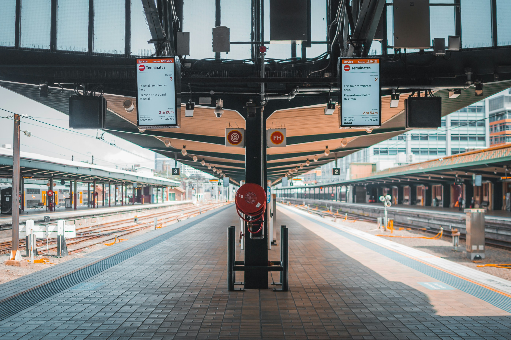

Viajar não precisa de ser um luxo inacessível. Com as estratégias certas, é possível explorar os seus destinos de sonho sem esgotar o orçamento. Aqui estão algumas dicas práticas para encontrar os melhores preços de viagens e tornar as suas aventuras mais acessíveis:
1. Planeie com Antecedência
Reservar voos e alojamentos com meses de antecedência é uma das formas mais eficazes de poupar dinheiro. As companhias aéreas e hotéis frequentemente oferecem descontos para quem se organiza cedo. Por outro lado, para os mais aventureiros, ofertas de última hora podem surgir – esteja atento!
2. Use Ferramentas de Comparação
Plataformas como Skyscanner, Google Flights e Kayak são indispensáveis para encontrar os melhores preços de voos. Estas ferramentas permitem comparar centenas de companhias aéreas e encontrar as datas mais económicas para viajar. Além disso, sites como Booking.com e Airbnb ajudam a localizar alojamentos ajustados ao seu orçamento.
3. Seja Flexível com Datas e Destinos
A flexibilidade é a chave para encontrar ofertas imperdíveis. Viajar fora de época ou durante os dias da semana, como terça ou quarta-feira, pode reduzir drasticamente os custos. Da mesma forma, considere explorar destinos menos populares, que muitas vezes oferecem experiências igualmente incríveis a preços mais baixos..
4. Subscreva Alertas de Preços
Saber dizer palavras simples como "olá", "obrigado" e "desculpe" no idioma local pode fazer uma enorme diferença na forma como é recebido pelos habitantes. Mostra respeito pela cultura e cria conexões mais genuínas.
5. Aproveite Milhas e Programas de Fidelidade
Um dos melhores aspetos de viajar é provar pratos típicos. Arrisque-se a experimentar algo novo, seja um prato tradicional num restaurante conhecido ou um petisco de rua. A gastronomia é uma forma de entender a cultura local.
6. Esteja Atento a Promoções e Feiras de Viagens
Evite planear itinerários muito apertados. Dê a si mesmo tempo para relaxar, apreciar os lugares e absorver a atmosfera do destino. Viajar não é apenas "ver tudo", mas sim aproveitar cada momento.
7. Considere Alternativas Económicas
Os habitantes locais são a melhor fonte de dicas e histórias autênticas. Converse com eles, seja em mercados, praças ou cafés. Muitas vezes, são eles que irão revelar os "segredos" do destino que os guias turísticos não mencionam.
8. Evite Taxas Extras
Seja um viajante responsável. Respeite as regras locais, vista-se de forma adequada em locais religiosos e evite comportamentos que possam ser considerados ofensivos. Além disso, cuide do meio ambiente: evite o uso de plásticos descartáveis e opte por transportes mais sustentáveis sempre que possível.
9. Viaje em Grupo
Capturar momentos é importante, mas não deixe a câmara ou o telemóvel serem os protagonistas da viagem. Esteja presente, aprecie a vista, sinta o cheiro, ouça os sons. Algumas memórias são mais preciosas quando vividas plenamente, não apenas registadas.
10. Seja Criativo e Aventuroso
Por fim, lembre-se de que viajar é sobre criar memórias, relaxar e viver experiências únicas. Esteja aberto ao novo, saia da sua zona de conforto e aproveite cada segundo.
E claro, procure as melhores promoções, connosco, aqui na OBLO!
Com estas dicas, não há desculpas para adiar a pr√≥xima viagem. Comece já a planear e descubra o mundo enquanto cuida da sua carteira! üåç‚úàÔ∏è
Leave a Comment